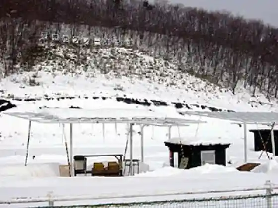
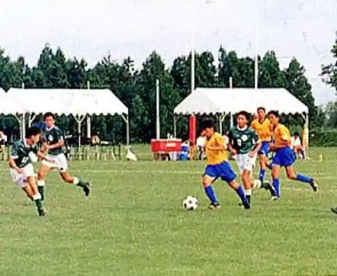
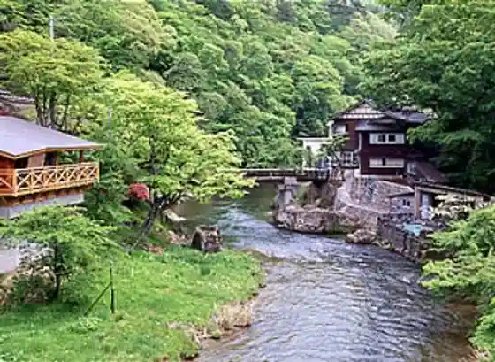

Hakosho Shokuhin Kimuchi Tsukuri Experience
Hanamaki, Iwate · 0198-25-2229 · Official / source link
Hanamaki Kure Shageki Ba
Hanamaki, Iwate · 0198-28-2266 · Official / source link

Hanamaki Supotsukyanpu Mura
Hanamaki, Iwate · 0198-28-2930 · Official / source link

Osawa Onsen
Hanamaki, Iwate · 0198-25-2021 · Official / source link

Kachan Resutoran Tsuta no Wa
Hanamaki, Iwate · 0198-29-4075 · Official / source link
Dai Onsen
Hanamaki, Iwate · 0198-27-2150 · Official / source link
Utsumiya Orchard Ringo Ya
Hanamaki, Iwate · 0198-47-2143 · Official / source link
Ishidoriya Aisuariina
Hanamaki, Iwate · 0198-45-6661 · Official / source link
Kinkon Tei
Hanamaki, Iwate · 0198-26-2250 · Official / source link
Kawara no Bo Campground
Hanamaki, Iwate · 0198-48-2111 · Official / source link
Kawa Gen Budo Sono
Hanamaki, Iwate · 0198-48-3425 · Official / source link
Dai Yaki
Hanamaki, Iwate · 0198-27-2622 · Official / source link
Marukambiru Daishokudo
Hanamaki, Iwate · 0198-29-5588 · Official / source link
Shirogane Buta Purachinapoku
Hanamaki, Iwate · 0198-22-2811 · Official / source link
Nihonryori Shin Kame Ie
Hanamaki, Iwate · 0198-22-3336 · Official / source link
Namari Onsen Ski Area
Hanamaki, Iwate · 0198-25-2711 · Official / source link
Nambu Kei Kokeshi (Sato Tadao)
Hanamaki, Iwate · 0198-24-7748 · Official / source link
Namari Onsen
Hanamaki, Iwate · 0198-25-2311 · Official / source link
Daiwa Buruberii Sono
Hanamaki, Iwate · 0198-24-4888 · Official / source link
Shin Namari Onsen
Hanamaki, Iwate · 0198-25-2619 · Official / source link
Osako Nogyo Taiken Jisshu Kan
Hanamaki, Iwate · 0198-41-3122 · Official / source link
Roadside Station Hanamaki Seinan
Hanamaki, Iwate · 0198-29-5522 · Official / source link
Ginga Plaza Yamaneko Ken
Hanamaki, Iwate · 0198-31-2013 · Official / source link
Miruku Kobo Bon Dia
Hanamaki, Iwate · 0198-48-3144 · Official / source link
Soba Bo Kamiya
Hanamaki, Iwate · 0198-27-4008 · Official / source link
San Sake no Ninki
Hanamaki, Iwate · 0198-24-2111 · Official / source link
Ederuwain
Hanamaki, Iwate · 0198-48-3037 · Official / source link
Hanamaki Kasa (Wa Kasa) Takita Kogei
Hanamaki, Iwate · 0198-31-2128 · Official / source link
Ganso Enshu Yaki (Mine no Sanga)
Hanamaki, Iwate · 0198-48-3152 · Official / source link
Tezukuri Chiizu (Hayachine Daigo)
Hanamaki, Iwate · 0198-48-5078 · Official / source link
Hanamaki Ningyo
Hanamaki, Iwate · 0198-23-5658 · Official / source link
Susumago Kokeshi
Hanamaki, Iwate · 0198-31-2165 · Official / source link
Ame Nimomagazu no Ren
Hanamaki, Iwate · 0198-24-3348 · Official / source link
Shinobi Koma
Hanamaki, Iwate · 0198-23-4856 · Official / source link
Hanamaki Onsen
Hanamaki, Iwate · 0198-37-2111 · Official / source link
Ginga Yume Komon Hankachi
Hanamaki, Iwate · 0198-24-4333 · Official / source link
Kinkon Shi
Hanamaki, Iwate · 0198-29-4522 · Official / source link
Narushima Washi
Hanamaki, Iwate · 0198-42-3948 · Official / source link
Jisho Nambu Morioka Joro Kane (Hanamaki Shiro Jisho)
Hanamaki, Iwate · 0198-24-2111 · Official / source link
Homusupan
Hanamaki, Iwate · 0198-42-3637 · Official / source link
Kaji Cho Yaki
Hanamaki, Iwate · 0198-23-3679 · Official / source link
Kawa Village Shuzo Mise
Hanamaki, Iwate · 0198-45-2226 · Official / source link
Hanamaki Nature Kyuyo Village Plaza
Hanamaki, Iwate · 0198-28-2811 · Official / source link
Matsukura Onsen
Hanamaki, Iwate · 0198-38-1125 · Official / source link
Kachan Hausu
Hanamaki, Iwate · 0198-24-2914 · Official / source link
Togatta Kei Kokeshi
Hanamaki, Iwate · 0198-27-2135 · Official / source link
Yabu Ya Hanamaki So Main Shop
Hanamaki, Iwate · 0198-24-1011 · Official / source link
Matsusaka Miso Mise
Hanamaki, Iwate · 0198-48-4151 · Official / source link
Ozora Taki
Hanamaki, Iwate · 0198-24-2111 · Official / source link
Ko Shio Yama
Hanamaki, Iwate · 0198-24-2111 · Official / source link
Wankosoba (Hanamaki)
Hanamaki, Iwate · 0198-29-4522 · Official / source link
Ginga Poppo (Karakuri Tokei)
Hanamaki, Iwate · 0198-22-4412 · Official / source link
Wankosoba Shokuji Tokoro Ka Tsukasa Ya
Hanamaki, Iwate · 0198-22-3322 · Official / source link
Washi Hariko
Hanamaki, Iwate · 0198-23-3381 · Official / source link
Wainzerii
Hanamaki, Iwate · 0198-48-3152 · Official / source link
Wildcat House Yamaneko Ken
Hanamaki, Iwate · 0198-31-2231 · Official / source link
Morioka Minami Gorufu Kurabu
Hanamaki, Iwate · 0198-45-5678 · Official / source link
Kaori Doro Iori Nodachi Kama
Hanamaki, Iwate · 0198-24-5425 · Official / source link
Kenji Saichu Honpo Suehiro
Hanamaki, Iwate · 0198-21-1500 · Official / source link
Nichi Kyojo no Sports Park
Hanamaki, Iwate · 0198-23-6150 · Official / source link
Hayachine Kagura
Hanamaki, Iwate · 0198-48-2111 · Official / source link
Hanamaki Sogo Bunkazai Center
Hanamaki, Iwate · 0198-29-4567 · Official / source link
Hanamaki Kanko Center
Hanamaki, Iwate · 0198-31-2244 · Official / source link
Hanamaki Omocha Art Museum
Hanamaki, Iwate · 080-9257-7987 · Official / source link
Ta Se Mizumi Oto Campground
Hanamaki, Iwate · 0198-44-5007 · Official / source link
Toriyagasaki Park
Hanamaki, Iwate · 0198-29-4522 · Official / source link
Sanchoku Aozora
Hanamaki, Iwate · 0198-42-3152 · Official / source link
Kikusui Kan Mukashi Gyararii (Me (Chigaya))
Hanamaki, Iwate · 0198-25-2233 · Official / source link
Seyama Yaki
Hanamaki, Iwate · 0198-27-2997 · Official / source link
Sassa Cho Jozo
Hanamaki, Iwate · 0198-42-2311 · Official / source link
Kyu Kohara Ie House (Nambu Magari Ie)
Hanamaki, Iwate · 0198-29-4567 · Official / source link
Miyazawakenji
Hanamaki, Iwate · 0198-31-2319 · Official / source link
Man Tetsugoro
Hanamaki, Iwate · 0198-42-4402 · Official / source link
Roadside Station (Hayachine)
Hanamaki, Iwate · 0198-48-5018 · Official / source link
Garasu Taiken Workshop Mori no Kuni
Hanamaki, Iwate · 0198-48-3009 · Official / source link
Prefectural Hanamaki Koiki Park
Hanamaki, Iwate · 0198-27-3586 · Official / source link
En Man Jikan Oto Do
Hanamaki, Iwate · 080-2805-7379 · Official / source link
Taka Village Kotaro Memorial Museum
Hanamaki, Iwate · 0198-28-3012 · Official / source link
Hanawa Tsutsumi Hanashobu Gunraku
Hanamaki, Iwate · 0198-45-1311 · Official / source link
Ishidoriya Folk History Museum
Hanamaki, Iwate · 0198-45-4513 · Official / source link
Nambu Toji Densho Kan
Hanamaki, Iwate · 0198-29-5768 · Official / source link
Ishidoriya Nogyo Densho Kan
Hanamaki, Iwate · 0198-45-6566 · Official / source link
Tannai Yama Shrine
Hanamaki, Iwate · 0198-44-2623 · Official / source link
Hayachineusuyukiso
Hanamaki, Iwate · 0198-48-2111 · Official / source link
Shimbori Castle Ruins
Hanamaki, Iwate · 0198-45-2111 · Official / source link
Taiko Tera
Hanamaki, Iwate · 0198-45-2111 · Official / source link
Hikari Hayashiji
Hanamaki, Iwate · 0198-45-6538 · Official / source link
Iwate Hanamaki Airport
Hanamaki, Iwate · 0198-26-5011 · Official / source link
Osako Koryu Kasseika Center Hayachine to Kenji no Tenjikan (Neko no Jimusho)
Hanamaki, Iwate · 0198-48-3231 · Official / source link
Wainshato Osako
Hanamaki, Iwate · 0198-48-3200 · Official / source link
Miyazawakenji Memorial Museum
Hanamaki, Iwate · 0198-31-2319 · Official / source link
Miyazawakenji Iihatobu Kan
Hanamaki, Iwate · 0198-31-2116 · Official / source link
Miyazawakenji Dowa Village
Hanamaki, Iwate · 0198-31-2211 · Official / source link
Koma Tozan
Hanamaki, Iwate · 0198-24-4410 · Official / source link
Taka Village Sanso
Hanamaki, Iwate · 0198-28-2270 · Official / source link
Hanamaki no Botan Sono
Hanamaki, Iwate · 0198-24-2111 · Official / source link
Poran no Plaza (Minami Sha Nichiji Kei Kadan)
Hanamaki, Iwate · 0198-31-2319 · Official / source link
Enjoji Mon
Hanamaki, Iwate · 0198-23-2030 · Official / source link
Ko Shio Shrine
Hanamaki, Iwate · 0198-31-2768 · Official / source link
Katsuyuki In
Hanamaki, Iwate · 0198-24-2446 · Official / source link
Toyosawa Dam
Hanamaki, Iwate · 0198-25-2330 · Official / source link
Hanamaki Kai Town 400 Nensai Kinen Dashi
Hanamaki, Iwate · 0198-24-2111 · Official / source link
Usuginu Falls
Hanamaki, Iwate · 0198-24-2111 · Official / source link
Ogase Falls
Hanamaki, Iwate · 0198-24-2111 · Official / source link
Igirisu Coast (Kitakami Kawa)
Hanamaki, Iwate · 0198-41-3591 · Official / source link
Hanamaki Museum
Hanamaki, Iwate · 0198-32-1030 · Official / source link
Mi Sho Tera
Hanamaki, Iwate · 0198-24-2111 · Official / source link
(Ame Nimomagazu) Shihi
Hanamaki, Iwate · 0198-24-2111 · Official / source link
Hanamaki Nitobe Memorial Museum
Hanamaki, Iwate · 0198-31-2120 · Official / source link
Sakura Chijin Kan
Hanamaki, Iwate · 080-1664-9851 · Official / source link
Toriya Saki Shrine
Hanamaki, Iwate · 0198-23-2030 · Official / source link
Nishi Mikado
Hanamaki, Iwate · 0198-24-2111 · Official / source link
Kiyomizudera
Hanamaki, Iwate · 0198-28-2624 · Official / source link
Kaze no Naru Hayashi
Hanamaki, Iwate · 0198-24-2111 · Official / source link
En Man Jikan Oto Tembo Chi
Hanamaki, Iwate · 0198-24-2111 · Official / source link
Hiratsuka Hanamaki Koryu Forest
Hanamaki, Iwate · 0198-24-2111 · Official / source link
Mirai Miyako City Ginga Chikyu Tetsudo
Hanamaki, Iwate · 0198-29-4522 · Official / source link
Doshin Residence
Hanamaki, Iwate · 0198-24-2111 · Official / source link
Taroshi Taki
Hanamaki, Iwate · 0198-45-2111 · Official / source link
Totsuka Mori Forest Park
Hanamaki, Iwate · 0198-45-2002 · Official / source link
Ta Se Mizumi
Hanamaki, Iwate · 0198-42-2111 · Official / source link
Hayachine Yama
Hanamaki, Iwate · 0198-48-2111 · Official / source link
Hayachine Dam
Hanamaki, Iwate · 0198-48-2111 · Official / source link
Keito Yama
Hanamaki, Iwate · 0198-48-2111 · Official / source link
Man Tetsugoro Kinen Art Museum
Hanamaki, Iwate · 0198-42-4402 · Official / source link
Narushima Washi Kogei Kan
Hanamaki, Iwate · 0198-42-3948 · Official / source link
Hayachine Dai Sho Ryu Tosawa Yamabushi Kagura
Hanamaki, Iwate · 0198-42-4803 · Official / source link
Hayachine Gaku Sasuga Hatoka Kagura
Hanamaki, Iwate · 0198-42-3095 · Official / source link
Towa B&G Kaiyo Center
Hanamaki, Iwate · 0198-44-5336 · Official / source link
Towa Furusato Mura Otameshi Workshop
Hanamaki, Iwate · 0198-43-1051 · Official / source link
Narushima Mitsuguma no Shrine
Hanamaki, Iwate · 0198-42-3921 · Official / source link
Ta Se Tsuri Park
Hanamaki, Iwate · 0198-44-5007 · Official / source link
Tateishi Hyakusho Yo
Hanamaki, Iwate · 0198-44-2878 · Official / source link
Taniuchi Densho Kobo Kan
Hanamaki, Iwate · 0198-44-2396 · Official / source link
Saki Ori Densho Kan
Hanamaki, Iwate · 0198-44-3125 · Official / source link
Kasuga Ryu Ochiai Shika Yo
Hanamaki, Iwate · 0198-42-4733 · Official / source link
Narushima Bishamon Do Kabuto Batsu Bishamonten Ritsuzo (Mitsuguma no Shrine)
Hanamaki, Iwate · 0198-42-3921 · Official / source link
Kyu Kohara Ie House (Nambu Magari Ie)
Hanamaki, Iwate · 0198-29-4567 · Official / source link
Roadside Station (Ishidoriya) Nambu Toji Village
Hanamaki, Iwate · 0198-45-6868 · Official / source link
Ose Kawa Sansa Odori
Hanamaki, Iwate · 0198-45-2918 · Official / source link
Kasuga Ryu Hachiman Shika Yo
Hanamaki, Iwate · 0198-45-4185 · Official / source link
Mukaiyama Forest Park
Hanamaki, Iwate · 0198-48-2111 · Official / source link
Osako Kyodo Bunka Hozon Denshu Kan (Hayachine Gaku Kagura Densho Kan)
Hanamaki, Iwate · 0198-48-5877 · Official / source link
Hayachine Shrine
Hanamaki, Iwate · 0198-48-5877 · Official / source link
Ederuwain Kojo
Hanamaki, Iwate · 0198-48-3037 · Official / source link
to Moriyama
Hanamaki, Iwate · 0198-62-1333 · Official / source link
Hanamaki Bunka Village
Hanamaki, Iwate · 0198-26-2773 · Official / source link
Kuzu Marukawa Keiryu
Hanamaki, Iwate · 0198-45-2111 · Official / source link
Gyaku Hiba
Hanamaki, Iwate · 0198-45-2111 · Official / source link
Kamabuchi Falls
Hanamaki, Iwate · 0198-24-2111 · Official / source link
Miyazawakenji Seika
Hanamaki, Iwate · 0198-24-2111 · Official / source link
Kenji no Plaza
Hanamaki, Iwate · 0198-24-0818 · Official / source link
Gindoro Park
Hanamaki, Iwate · 0198-24-2111 · Official / source link
Kabutomushi Fureai Domu
Hanamaki, Iwate · 070-2018-5740 · Official / source link